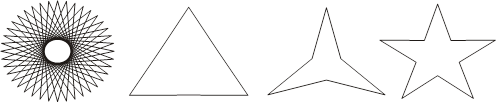

Сабақтың мақсаты: Студенттерді әр түрлі макет құруға және олардың өңдеуге үйрету
Қажетті материалдар мен жабдықтар: ДЭЕМ, тәжірибелік сабақтарды орындауға нұсқаулықтар, тақта, бейне проектор.
Жұмыстың мазмұны мен орындалу реті:
Теориялық бөлім:
Макет құру – бұл дизайнердің ойын жүзеге асыру үшін беттің және макет элементтерінің (мәтіннің, растрлік және векторлық бейнелердің) орналасу параметрлерін баптау. Жаңа құжат құрғанда CorelDraw автоматты түрде А4 (210х297 мм) форматын орнатады. Форматты өзгерту керек болса, ашылатын форматтар тізімінен керекті форматты таңдау керек немесе қасиеттер палитрасында тиісті өріске қажетті көлемді орнату керек. Беттің макетін толық баптау үшін Tools > Options командасын орындап, Document > Page бетін ашамыз. Бұл бетте 4 пункт бар:
3. Size (көлем) – бұл пункте беттің параметрін баптауға болады. Алдын ала құру терезесінде енгізілген өзгертулерді байқауға болады.
4. Logout (макет) – бұл пункте ашылатын Logout тізім көмегімен 6 шаблонның біреуін таңдауға болады :
· Full Page (толық бет)
· Book (кітап)
· Book Let (буклет)
· Tent Card (Открытка)
· Side Fold (карточка с боковым сгибом)
· Top Fold Card (карточка с верхним сгибом)
Макеттің өзгеруі алдын ала көру терезесінде бейнеленеді. Facing Page (айналық беттер) туын екі жақты басылым үшін қолданады.
Start on тізімі (начать с ...) бірінші беттің номері жұп немесе тақ болатынын анықтайды.
3. Label (наклейки) компакт дискімен бірге болатын 800 – ден астам стандартты наклейкалар пакетінен наклейканы таңдауға мүмкіндік береді. Егер де керекті нұсқа жоқ болса, Customize Label бөлуді баптау батырмасына шертіп, ашылған сұхбат терезесінде бөлу параметрлерін болады.
4. Background (фон) – бқл пункт беттің фонын таңдауға мүмкіндік береді. Ауыстырғыштар көмегімен 3 нұсқаны таңдауға болады.
· No Background (фон жоқ)
· Solid (бір түсті фон)
· Bitmap (растрлік форматтағы бейне).
Тапсырмалар:
1. Мына көпбұрыштарды құрыңыз.

2. АҚШ туының бейнесін салыңыз. (ақ фонда жеті қызыл жолақ, сол жақ жоғарғы бұрышында көк төртбұрыш ішінде шахматты тәртіпте қойылған 50 ақ түске боялған бес жұлдыздар).
3. Турция туын салыңыз. (қызыл фонда солдан оңға қараған, ақ түсті ай. Ай ортасында ақ түсті бес жұлдыз).
4. Ирак туын салыңыз ( Үш жолақ: үстінде – қызыл, ортасында – ақ, астында – қара. Ақ жолақ ортасында үш жасыл түске боялған бес жұлдыз).
5. Панама туын салыңыз. (Шахматты тәртіпте төрт тіктөртбұрыш. Сол жақ жоғарғы және оң жақ төменгі төртбұрыштар ақ түсте. Сол жақ төменгі көк, оң жақ жоғарғы қызыл. Сол жақ жоғарғысында көк бес жұлдыз, оң жақ төменгісінде қызыл бес жұлдыз).